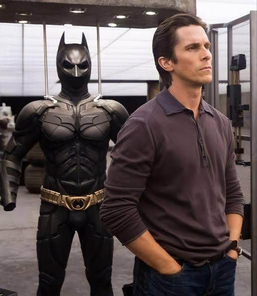

Leyenda de Gotica

Batman identidad secreta de Bruce Wayen, multimillonario filantropo y due;o de Wayne Enterprises. Decide volverse un hero tras presenciar el asesinato de sus padres, Thomas y Martha Wayne, durante su infancia en Ciudad Gotica. Este a diferencia de los demas heroes convirtio su dolor en motivacion para convertir su cuerpo y mente en una arma definitiva para detener el crimen.
Durante años, viajo en busqueda de ser entrenado por maestros de artes marciales, criminologos y estrategas. Cuando regreso a Ciudad Gotica entendio que la fuerza fisica no le era suficiente pues necesitaba convertirse en un simbolo que infundiera miedo en los criminales. Adoptando asi la figura del murcielago junto a su base la Baticueva.